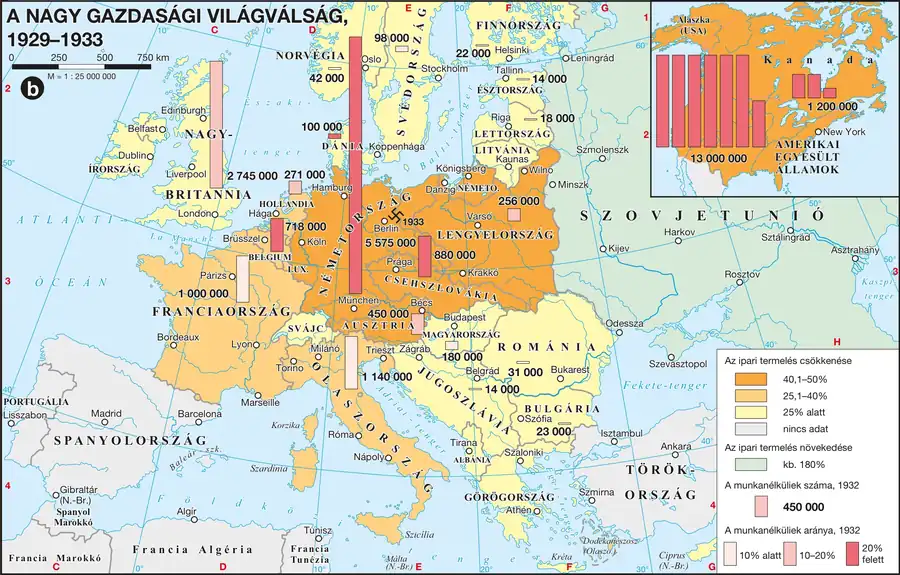

A weimári köztársaság megrendülései
A weimári köztársaság egy forradalom és egy kommunista hatalomátvételi kísérlet után, 1919-ben született meg. A fiatal köztársaság súlyos erőpróbákat élt át: a békeszerződés aláírása (1919), a szélsőjobboldali-katonai Kapp–Lüttwitz-puccs (1920), a jóvátételi fizetések elmaradása miatti francia-belga bevonulás a Ruhr-vidékre (1923), és Hitler müncheni „sörpuccsa” (1923). Az 1920-as évek közepétől stabilizálódott a helyzet: a Dawes-terv (1924) amerikai kölcsönökkel indította el a gazdasági talpraállást, az 1925-ös locarnói szerződésekben pedig Németország lemondott határai erőszakos megváltoztatásáról. A nagy gazdasági világválság (1929–33) azonban ismét megingatta a stabilitást: bár 1929-ben elfogadták a jóvátételi fizetéseket rendező Young-tervet, a gazdaság a leálló amerikai kölcsönök miatt megrendült, és megerősödtek a szélsőséges pártok — az 1930. szeptemberi választásokon a szociáldemokraták mögött már második lett az NSDAP, harmadik a kommunista párt.
A náci ideológia gyökerei
A náci ideológia több hagyományos mozgalom ötvöződéséből alakult ki: az osztrák területeken jelentkező pángermanizmus és antiszemitizmus, valamint a németországi népi (völkisch) mozgalom, amely a régi germán hagyományokhoz nyúlt vissza. Ezeken kívül XIX. századi ideológiák is meghatározták: a fajelmélet (a történelem a fajok harca), a térelmélet (a népek fennmaradása a lakosság és a terület növelésétől függ), a tömeglélektan (az arctalan tömeg irányítható, igényli, hogy vezessék) és a szociál- és nacionáldarwinizmus (a népek között is dúl a létharc). Hitler a Mein Kampfban fejtette ki elveit: fajelmélete szerint léteznek magasabb rendű fajok (árják/germánok), alacsonyabb rendű, rabszolgasorba taszítandó fajok (latin népek, szlávok), és kiirtandó népek (zsidók, cigányok). Az élettér-elmélet szerint hódításai három lépcsőben valósulnának meg: Európa németjeinek egyesítése, egy európai német dominanciájú birodalom, majd német világbirodalom.
Vizsgacsapda: a weimári köztársaság nem a gazdasági világválság miatt omlott össze közvetlenül — a válság csak felerősítette a már korábban is meglévő politikai instabilitást (puccsok, radikális pártok), és ezt a felerősödést használta ki a náci mozgalom, hogy jelentős választási sikereket érjen el.
| Fogalmak | Személyek | Kronológia | Topográfia |
|---|---|---|---|
| nemzetiszocializmus; fajelmélet; antiszemitizmus | Hitler | — | Berlin |
A nagy gazdasági világválság, 1929–1933
A válság nemzetközi terjedése és a német politikai radikalizálódás gazdasági háttere vizsgálható.

1. forrás — Hitler fajelmélete a Mein Kampfból (tartalmi kivonat)
Hitler szerint a történelem a fajok szüntelen harca, amelyben az erősebb győz, a gyengébb elpusztul. Elmélete a fajokat hierarchikus rendbe sorolta: a germán (árja) fajt tekintette a legmagasabb rendűnek, hivatott uralkodó népnek; a latin, szláv és más népeket alacsonyabb rendű, szolgasorba taszítandó népeknek; a zsidóságot pedig a legalacsonyabb rendű, ugyanakkor — mert szerinte mindenütt jelen van — a legveszélyesebb fajnak tartotta.
a) Milyen elvi alapon rendezte Hitler hierarchiába a fajokat?
b) Melyik népet tartotta a legmagasabb rendűnek?
c) Miért tartotta különösen veszélyesnek a zsidóságot?
Ellenőrző feladatok
Állítás: A Dawes-terv (1924) amerikai kölcsönökkel segítette a német gazdaság talpraállását.
Az 1930. szeptemberi választásokon hányadik legerősebb párt lett az NSDAP?
Egészítsd ki: Hitler elveit és terveit a ______ ______ (jelentése: „Harcom”) című könyvében fejtette ki.